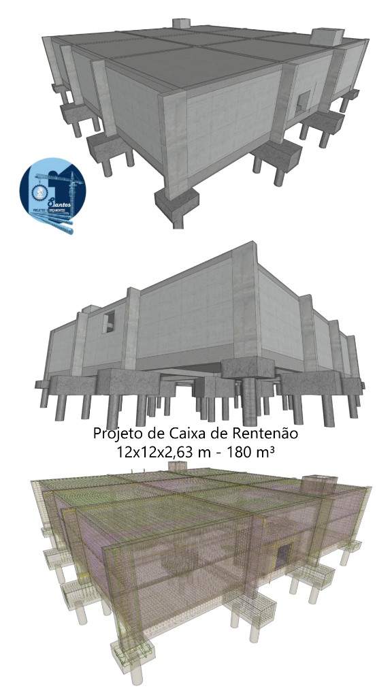
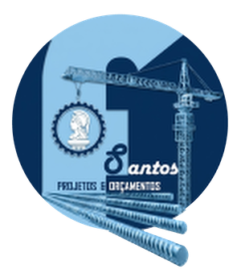
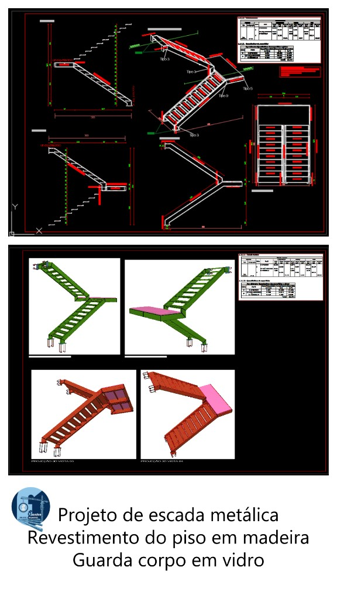

Projeto de Caixa de Retenção
12×12×2,63 m — 180 m³

Projeto estrutural, estrutura metálica e complementares em Manaus — galpão, ponte rolante, clínica e obra pública, com ART.
100+ projetos executados
Sou o engenheiro civil Francirley Pereira Santos, de Manaus-AM, especialista em estruturas metálicas e concreto armado, com mais de 100 projetos executados — entre eles, projetos de pontes rolantes para a Amazon Aço. Também desenvolvo projetos hidrossanitários, elétricos, de prevenção e combate a incêndio (PPCI), de arquitetura e de infraestrutura, do estudo inicial ao detalhamento executivo.
Trabalho ainda com geoprocessamento (ArcGIS e QGIS) e com orçamentos de obra baseados no SINAPI, para que cada projeto venha acompanhado de quantitativos e custos consistentes.
Aqui no site reúno ferramentas gratuitas de pré-dimensionamento com memória de cálculo, tabelas de engenharia, o orçamento estimativo de obra e o simulador de honorários de projeto.
Ferramentas: Revit · AutoCAD · Civil 3D · QiBuilder · ArcGIS · QGIS
Obras escolhidas para abrir o portfólio. As imagens desta faixa são atualizadas na área restrita.

12×12×2,63 m — 180 m³

Revestimento do piso em madeira e guarda-corpo em vidro
As obras em destaque ficam no início. O filtro Ponte rolante reúne as pranchas de cada modelo num único conjunto. O restante da lista reúne os outros projetos.
Calculadoras de pré-dimensionamento e o orçamento estimativo de obra (SINAPI) são apoio técnico. O custo da obra não é o honorário do projeto. Para contratar a elaboração, use o WhatsApp ou a seção abaixo.
Abrir ferramentas Orçamento estimativo de obra (SINAPI)Honorários de elaboração dos projetos, com ART. Não incluem execução da obra, materiais ou mão de obra.
A tabela por m² vale para qualquer tipo de obra. Marque as disciplinas do escopo, inclusive geoprocessamento. O valor de referência continua sujeito à análise do projeto.
| Item | Disciplina | Coef. área | Área projeto (m²) | R$/m² | Total |
|---|---|---|---|---|---|
| Subtotal dos projetos | |||||
| Emissão das ART | |||||
| Desconto | |||||
| TOTAL GERAL | |||||
| Valor médio por m² | |||||
Valor sob consulta. Para indústria, órgão público, galpão, ponte rolante, contenção, caixa de retenção, reservatório, fundações e licitação, a tabela de R$/m² de casa não entra na proposta. O valor é confirmado no WhatsApp, depois da análise do vão, da carga e dos documentos.
Informe área, cidade e telefone e envie. A FSantos devolve o escopo e o honorário.
Área de projeto = área construída (base) × coeficiente de área da disciplina. No estrutural, o R$/m² é R$ 25,00 abaixo de 100 m², R$ 17,50 de 100 a 1.000 m² e R$ 10,00 acima de 1.000 m²; cada percentual de complexidade incide sobre esse valor base e soma ao total da disciplina. Valores de referência para esse pacote.
A conta é opcional. Dá para gerar a proposta e chamar no WhatsApp sem login.
Conectado como
| Data | Número | Projeto | Área (m²) | Total | Ações |
|---|
Vamos conversar sobre o seu projeto.
WhatsApp (92) 99226-2786